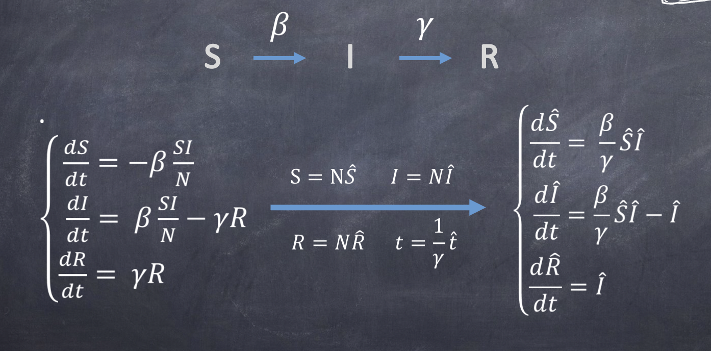
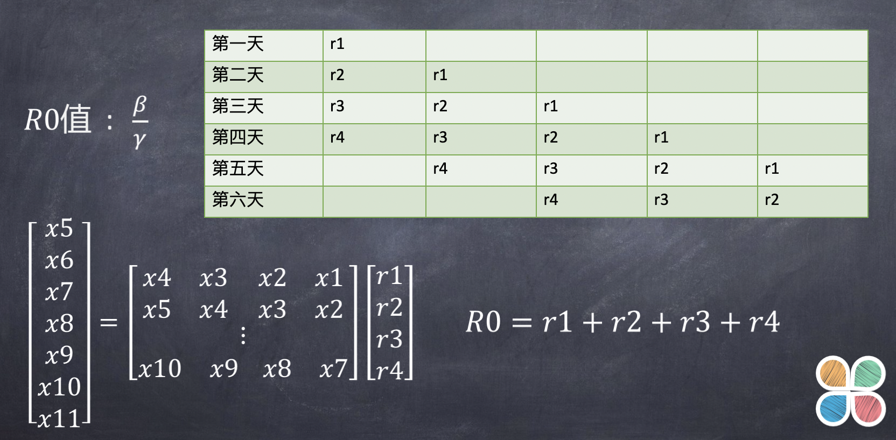

SIR模型
SIR 模型，最典型的作法是將個體分成三類：易感染（S， Suceptible）、感染（I，Infectious）、康復（R，Recovered）。易感染者為尚 未受到病毒感染，可能將會受到感染者；感染者為已經受到感染且可感染他人 者；康復者為從疾病中復原，且不在具有傳染他人能力者。除了最初的的病毒 帶原者外，其他的個體在系統執行的最初皆屬於易感染者。
在 SIR 模型內表達傳染型態的參數有效傳染機率（P，Transmission Probability）、接觸機率（CP，Contact Probability）和病程（Disease Course）。 P 為帶有病毒的個體將疾病散布的機率。CP 表示個體在感染群組裡有效接觸的 機率，其中的有效接觸定義為易感染者可以被傳染的機率。病程的長短決定於 受感染者處在病毒的時期；若感染期為 2 天（時間基本單位為 0.1 天），則此個 體需要經過 20 個基本單位方能康復。
（取自 衛生署疾病管制局科技研究計畫成果報告-初稿。）
|  |  |